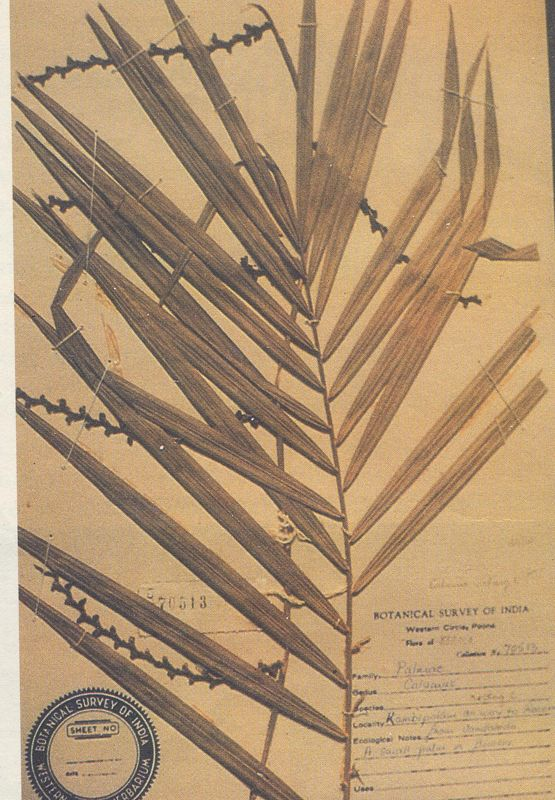
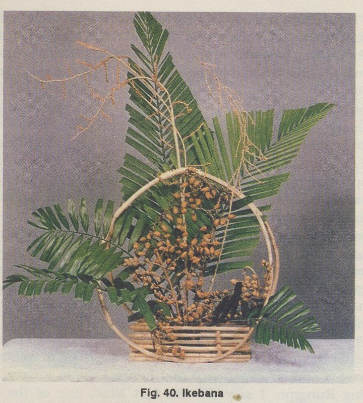

HABIT & HABITAT:

It is seen at Cultivated fields
and Plains, Dry areas, evergreen forest, Forests, high elevation, Plains of Kurnool,
Mahanandi and Nallamalais ofAndhra Pradesh, Pune and Sindhudurg of Maharashtra,
Palni hills, Tiruchi and South Arcot of Tamil Nadu in India and also in Sri Lanka.
Availability :
Status :
Back to Top
DIAGNOSTIC FEATURES :
Slender,
climbing cane. stem clustering, 10 m long, with sheaths up to 1.3cm girth, without
sheaths to 1 cm. internodes 35 - 45 cm long, sheath 1 cm long; spines acicular;
knee prominent, flagellum 2 - 2.5 m. long. Leaves 50 - 80 cm long; petiole very
short or absent; rachis armed with 1 cm long, yellow, black - tipped spines,
leaflets many, regularly placed each 24 - 36 cm x 1.8 - 2 cm, upper leaflets
gradually becoming smaller, linear lanceolate, acumen elogate, tipped with sharp
bristles, margins setulose to spinose, mid - vein ciliate or setose beneath
from center onwards. Inflorescence 2.5 - 3 m long, male much longer than the
female; primary sheath compacty sheathing, minutely spiny, partial infloresences
4 - 5, each 55- 70 cm long, secondary sheath 2.3 - 2.6 cm long, basally narrowed,
expanding to a cupular structure in the upper region, male rachillae upto 3cm,
long, cecurved, female rechillae 7.5 - 8.5 cm long involucrophorum sessile,
involucre cupular. Fruits 1.2-1.2 cm across, void to obovoid seated on the minute
perianth, scales in 21 vertical rows, pale yellow, with avery narrow, thin,
colourless margin and a shallow median channel. Endosperm not ruminate.
It delights in rich, moist soil, where there are bushes and trees for it to
climb on.
Back to Top
REPRODUCTIVE BIOLOGY

Calamus species are dioecious.
Breeding System :
The inflorescence is
sequential and acropetalous. Flowers are minute and genarally pale yellow in
colour. They are sessile, typically trimerous, with three sepals, three petals,
six stamens in male flowers and a trilocular ovary in female flowers. The ovary
from the very young stage itself is covered with reflexed imbricate scales in
vertical rows. The stigmas are large and reflexed.
Phenology :
Flowering in February - March ; beginning of the rains and fruit ripens
during the cold season.
Pollinators:
The pollination appears to be both
entomophilous by insects of the order Hymenoptera and anemophilous.
Seed Biology :
Fruits are drupaceous, globose
or ellipsoid in shape and covered with scales. Each fruit bears a single seed
at maturity. The seed is subglobose or oblong and smooth, grooved or pitted.
Seed Germination :
The seeds should be
put in a container with water and the seeds that float must be rejected. The
scales of healthy seeds have to be removed and the mucilage has to be rubbed
along with the hard seed coat with sand and washed with water thus exposing the seed.
The white seed obtained can be sown directly
or may be treated with fungicide and kept in moist sawdust in a polythene cover
with a little aeration. When such pre-treated seeds are sown, they show high
percentage of germination. The seeds start germination any time after 15 days
and continue to do so for up to 2-3 months.
Cultivation:
One year old seedlings, which
are about 40-50 cm, are fit for planting in the field. pits of 50-75 centimetercube
are necessary for planting.The pits may be dug with spacing of 5m X 5m, 5m X
7.5m or 7.5m X 7.5m. Planting may done with the onset of rains 2- 3 plants for
each feet can be planted.
Back to Top
MAJOR PESTS & DISEASES
In general the rattens are hardy species and are not prone to diseases are attacck
by pests.There has been no record of any occurence of pests and diseases, for
longtime. However based on a few recent reports of attacks of pests and diseases,
it is summerised below.
Pests:
In India, pests are:
1. Botryodiploidea - theobromae. Ceratocystis sp.
2. Aspergillus niger, Chaetomlum spp.Trichrus spiralis, Penicillum sp.
3. Schizophyllum- commune, Corllus sp., Merultus sp., Pycosporus sp.
And Diseases are :
1. Lossof raw material through staining.
2. Blemishing of surfaces, black streaks, molds.
3. Decay of canes stored in high humidity.
Back to Top
.jpg)